|
|
|
|
|
From Bali to Lombok
Greetings to all from Hinewai, currently anchored off Teluk Naruh, a small bay to the north of Lombok (well, as it was when we started this – now being sent from the little island of Labuan off the north west coast of Borneo)..
Shreck and the Propeller
The end of our last email found us languishing in Bali Marina, Benoa, nursing the disappointment of a broken propeller, but confidently telling you that we’d soon have it off, repaired and refitted.
Blah, should have know better.
Job # 1 was to find a diver, and with all the port and oil work going on in the area, that was harder than we first thought. Eventually this huge man, dressed in all his Balinese finery, knocked on the boat. It took a little while since he had no English and we had not progressed past “Hello”, “A large beer please” and “Thank-you” with our Indonesian at that stage, but we worked out he was a local diver who could help us. Being a seller’s market, he was not coming cheap, but we were getting a little desperate by then.
The next day, he rocks up with his gear – a simple snorkel face mask with a bit of old pipe attached for his air. His compressor? Well, it looked a lot like the back end of a vacuum cleaner, with the other end of his air line disappearing into the works.
It turned out to be a pretty hard job to get
the prop off – bad visibility, lots of tiny grub screws and
jammed and sheered parts. Shrek, as we had nick-named our
diver by 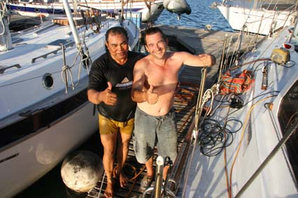
The words “Catastrophic Failure” came to mind – the damage was extensive and it was clear we wouldn’t be refitting it in Bali. So we DHL’ed it back to Australia (US$125 – arrgh!) and plan to refit it when we haul out in Langkawi, Malaysia, in October.
Fortunately, amid all our spares we had
brought our old prop so we called Shrek back in to fit it.
This necessitated an exciting ride on the back of his moped to a local engineering shop (literally a shop (no windows) with a few ancient lathes and other machine tools) to get a couple of big locking nuts made up. But they turned out two beautiful big nuts out of stainless steel within 24 hours – thankfully Shrek picked them up.
While the prop saga continued we were stuck with the boat so took the chance to do some odd jobs – like repainting vast areas of the deck. There’s no non-slip on Bali so we went down to Sanur beach and stole some of their sand, washing it well to remove the salt before mixing it with the paint.
New Friends
We’d also been meeting a few others in the marina as yachts came and went.
Some were boats owned by absentee owners, being delivered to places where the owner might meet them. David is an Italian diver who was recovering from a stuffed knee on one such boat – but he had plenty of time since the Skipper had a badly infected foot and was returning to Italy for treatment; there was Dharma, a stunning 70 ft yacht skippered by a Spaniard with 4 beautiful women as crew – they soon headed for the Maldives to meet the French owners; and Sam and Jason, late teens, crewing on a big Yank yacht Nomadess– I have never seen such hard workers, redoing most of the bright work while the Skipper was away.
Some are like us – cruisers. A steel Dutch
boat that had been cruising for 10 years,
We’ve both been to Bali a few times and so the usual tourist runs did not appeal. Peter spent one day helping Tom run his yacht up to Nusa Lemboggan, returning on one of Fast Cats and we had a few days and nights out, but spent most time sorting out Hinewai. Finally, we were then ready to head on – and the weather closed in. If one more person had said to us that the strong winds and heavy rain was so unusual for this time of year, we’d have hit them. Finally, the weather broke and we headed off north for Nusa Lemboggan, an island about 12 miles away.
Leaving Bali for Nusa Lemboggan
This is a trip up against the infamous Lombok current, which can flow at up to 6 knots (as we had found out when trying to get to Bali). The trip wasn’t too bad, hugging the coast for a bit before crossing, but we saw the oddest eddies and flows in the water and the trip took nearly six hours – and our average boat speed over that time was 6.5knots – so we went through over 30 miles of water to cover 12 miles over ground.
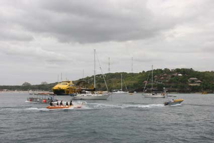 At Nusa Lemboggan we met up with Tom once more – he’d been sitting out the winds there – and Tris and Jas who left earlier the same day. It’s a strange anchorage – beautifully quiet at night, but during the day, several large party boats come over from Bali and the place is full of Banana Boats and worse – jet skis.
Even so, we spent a couple of days there,
enjoying great meals in the pretty deserted restaurants in
the evenings before getting ready to head off. 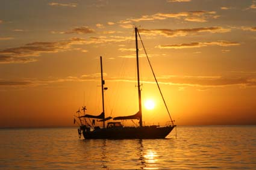
And enjoying our first wrapped anchor chain. The seabed at Nusa Lemboggan is a mixture of sand, coral bombs and mushrooms so as you swing around your anchor with the wind and tide, you quietly wrap the chain around the coral. We’d guessed we were caught so Jean had snorkeled out to look at where the chain was going, and had come back with an interesting diagram of where the chain was. A sort of Dada knitting pattern.
That morning, Peter was up in the bow working the anchor winch while Jean steered. Peter stares into the water through his polarized sunglasses trying see where the chain goes while directing Jean. It’s a mixture of motoring forward, pulling chain in until it catches, then letting some slack out as Jean goes astern swinging the bow of the yacht to try and slide the caught chain out from under the coral. Then forward again, pulling chain in until we get caught again.
It took nearly two hours to get free, but at least Jean didn’t have to dive to try and free everything.
With our nice shiny chain, we headed across the north of Nusa Lemboggan for Lombok, the big island to the west of Bali. And it was a stunning sail.
It’s not been often over the last year or so we have had the chance to sail Hinewai with the wind on the nose – mostly it’s all down wind sailing. But that day, we had great winds of 20ish knots on a tight reach and she flew. One of the best days sailing we’ve had.
Shush! The Secret Island Resort
Our destination was Gili Gede, a small island mid-way up the west coast of Lombok – we’d heard there was a beautiful sheltered anchorage there with an interesting bar called “Secret Island Resort” (www.secretislandresort.com). Tris and Jas in Eloise decided to come over as well while Tom headed north to the Gili’s.
Secret it certainly is. We weren’t quite sure where to go so tried calling up the Bar on VHF Channel 16, the general hailing frequency. No luck. We had a phone number, but the mobile signal was so bad that we couldn’t get through. In desperation, Jean tried texting.
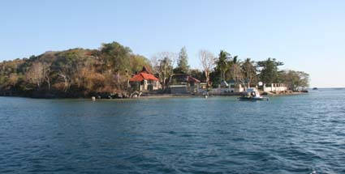 Tris & Jas had obvious had the same idea because they called us on the radio and said they’d had a text back saying someone was coming out in a boat to meet us. Sure enough, in the distance, this little boat appeared and led us down between the rocks and pearl farms through a narrow passage at the end of the island. Once through, a lagoon opened up with good firm holding for the anchor.
“Secret Island” turned out to be more than a
bar, in fact it is a small resort still being built and
owned by Peter Jones, a laid back American from Hawaii.
Although not quite completed, Peter is just starting to
advertise and takes guests in if they knock on the door.
And being an ex-sailor, he was delighted when our two yachts
appeared. In many ways, it reminded me of the Druidston
down in South Wales – albeit 30 years ago before it lost its
innocence. 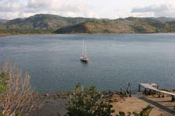
The anchorage was stunning, totally protected from all directions and we decided to stay a couple of days to fix a couple of things and just generally relax. Jean took the opportunity to go snorkeling with Peter Jones and the others to some of the local reefs –her first snorkeling since we got here.
Northern Lombok, lazy days and working on the boat
From Secret Island, we headed north with the view to stopping a night off Sengiggi – a fairly up-market town boasting a few flash resorts. Unfortunately, when we arrived, the swell was making where we planned to anchor very rolly so we headed on to Teluk Naruh up in the north west corner of Lombok.
At first sight, it looks full of small buoys, which are in fact the pearl farms, but after passing those an easy entry opens up on the east side. We slowly cruised in looking for somewhere to anchor (it’s easy to spot us doing this – the anchors hanging down and just touching the water, Peter’s up in the bow totally confusing Jean on the helm with various hand signals which are nothing like the ones we have agreed on).
But it was not so easy to find somewhere to anchor – we were no more than 20ft from the shore and still had over 60ft of water below us, and it quickly got deeper. While we carry 400ft of chain, that close in with unknown holding is not ideal.
Then this little yellow canoe arrives with a
young chap called Mohammed paddling away. After the usual
greetings and “Where are you from?” he pointed out some
mooring buoys put down by the locals for yachts to use – and
at just 40,000 rp (50 cents/25p) a night. So we and
Eloise each picked up a mooring and Tris, who seems
happier in the water than out, dived over the side to check
how it was anchored. One of the problems with moorings over
here is often they are not held in place by much and give a
false sense of security, but here a seriously big block of
concrete assured us we were going nowhere. 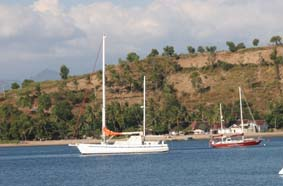
At first sight, Teluk Narah does not have too much going for it – it’s a pretty enough anchorage, but there’s nothing much there. But it is a sort of gateway to northern Lombok and to the Gili’s, a couple of miles to the north.
Our first day was spent working on the boat (as ever). While most things to date we have been able to fix quickly, there were a couple of jobs that were looking challenging – the most important of which is the water maker.
For some reason, it had stopped making water
so Peter spent a day trying to work out why by the simple
expedient of starting at one end of the system until he
found the bit not working. After half a day crawling into
cupboards to reach filters, boost pumps etc, it seems that
the problem is in the actual high pressure pump – and that’s
a big job. To get the pump out is going to need a fair bit
of dismantling of the nav station, and we don’t have any
parts anyway. It’s a job we will have to leave ‘till
Singapore. 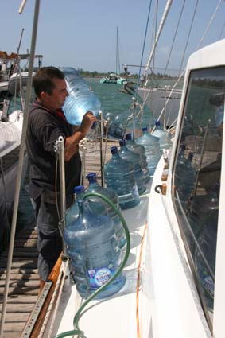
So we are stuck having to buy the local water which at 8,000 rp for 19 ltrs is not a great financial impost, but hard work humping all these bottles of water onto the dinghy, up onto the boat and then siphoning them into the tanks.
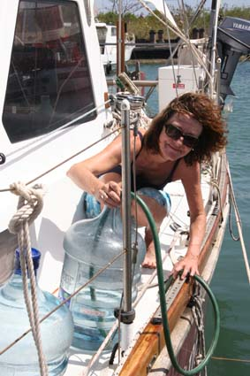 The next day, we shared a car and driver with Tris and Jas, and headed down into Sengiggi for a look around and to see what provisions there were. While still a touristy place, Sengiggi is far more laid back than Bali. While there are still touts trying to sell you car or bike hire, watches, DVD’s and other assorted knick-knacks, they do not have the same degree of pushiness. Indeed, once you say “No”, most are quite happy to chat and practice their English.
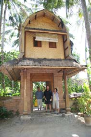 For lunch, T & J took us to Sentai, a small resort they had stayed at previously. It is a place of quietness and serenity, where you go for the yoga, contemplation, spiritual rebirth and vegetarian food. Peter’s question whether they would cook him a steak if he bought one along went down like a ton of bricks, but it was in fact, a lovely and very cheap lunch. And even better, they had a great book-swap library.
Books are a constant issue on cruising yachts. Great for wiling the hours away on passage or when stuck somewhere, you never have enough. And buying them costs a fortune. So many places now have book swap libraries. Some are straight book for book, some are by the foot and some buy back books for half of what they sell them. Whenever we dispose of a book, we always stamp it with our ship’s stamp – just to say we’ve been here.
After Sentai, we took T & J down to a small resort we once stayed at. The Sheraton. It was where we spent Peter’s 40th while crewing on Sweetwater so it was a real visit for old time’s sake. We went down and sat at the pool bar, had a couple of beers and nearly fell off our stools when we got the bill – even at Happy Hour Half prices, the beer was still 50% more than we were used to paying. Oh, how the other half live.
But as we left, Jean had a glint in her eye – she had had an idea.
We’d been doing some thinking about what to do next. While it had been nice to be sailing in company, we were hankering to move on but Tom was off round the flesh pots of Gili T trying to find some backpackers to crew for him and T & J were waiting for a couple of other boats they knew from WA to arrive.
On the other hand, we had heard of a race up near Brunei at the end of August that sounded like it might be fun – and they pay you for attending. But we still had one special place to visit in Indonesia – the orangutans of Borneo. So we decided we would head on a soon as possible.
That afternoon, Peter borrowed a few empty Jerry Cans from Tris (we carry 5 x 20lt cans ourselves, but they are tied onto the barge board on the starboard side and are a right pain to untie and retie) and scrounged a ride in an old pick-up to a local town to get fuel which was then decanted into the tanks.
The next day, the four of us headed into Matteram, the big local town, for provisions and a couple of bits to fix a small problem on the outboard. We came back through Sengiggi and Jean got the driver to drop us off at the Sheraton again – then as we wandered to the bar, she and Jas disappeared off for a bit, returning in swimming cossies with hotel towels and went for a swim in the pool. And then explained that the changing rooms had hot showers – so Peter and Tris made good use of them as well.
Peter and the Sea-Snake
Back at the boat, we offloaded the supplies
and while Jean was packing everything 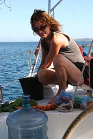
This job necessitates lying in the dinghy, hanging on to Hinewai with one hand and scrubbing away with the other. Jean came out on deck for a break and a chat, and Peter had almost finished when he caught a movement out of the corner of his eye. He was sharing the dinghy with a sea-snake that had crawled up the leg of the outboard.
Jean says his feet didn’t touch the side as he leapt over the safety lines into Hinewai (well, these snakes are 60 times more venomous that Black Mambas) and the two of us spend the next 20 minutes watching the snake slide round and round the bottom of the engine and make itself well at home.
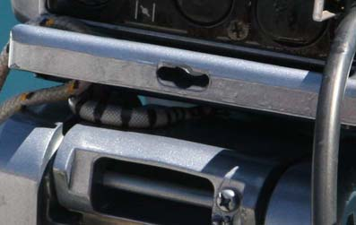 Not sure what to do, we called up on the radio to see if anyone had any ideas – and fresh water, washing-up liquid and alcohol were suggested as just the thing to remove unwanted snakes. For the record, none work – you just end up with a very clean inebriated snake who promptly falls asleep in an inaccessible part of the engine. So we just left it to it, and a couple of hours later, it seemed to have gone – off partying probably.
The only useful comment had been that they have very small mouths and unless they catch you on a flap of flesh (earlobe, web between fingers etc) they can’t get their jaws wide enough to bite. But Peter was taking no chances – despite the 35C temperature, he had multiple layers of clothes, boots, safety goggles and rigging gloves on as he climbed into the dinghy to confirm it was now snake free.
Heading north from Lombok
Strange as it may seem, one of the problems at the moment is time. If on passage you are either on your 3-hours watch, or sleeping, resting or preparing food when off watch. When you get somewhere, not only are there the things you went there to do, but all the various little jobs that Hinewai keeps bringing up. And catching up on sleep.
Finding a reasonably undisturbed longish time to do things like this email, or updating the website, is actually quite hard. Indeed, I am actually writing this as we motor up the west cost of Borneo. So my apologies, we are a little behind, but even if we were totally up to date, we’ve had no internet access since Nusa Lemboggan anyway.
So, we’ll get this email finished and ready to go, get the website updated on the PC and ready to upload – and hopefully will get internet access soon.
In the mean time, we can start on the tale of Kumai and the orangutans, which starts……
“Our last evening in Teluk Narah was spent working on the charts, working out the route, waypoints etc and uploading them into the Nav System.
Then, the next day we headed off – destination Kumai in Kalimantan (or deepest darkest Borneo as it was once known).”
Jean & Peter
Next Log Page: Kumai and the orang-utans
|
|
|
|
|
|
|
The Crew The Route The Yacht The Log Guestbook Links Contact Us |
|
|
|
|
|
Home |
|
|
All Original Content of this Web Site Copyright © 2000, 2001, 2002, 2003, 2004, 2005, 2006, 2007, 2008, 2009 Ocean Odyssey Pty Ltd |

 including the
Antarctic; the Spier family, cruising their cat with their
three young kids – and nicer kids you’d never meet; Tom,
ex-USAAF pilot from Hawaii, tens years cruising solo (well,
almost – he has a very small shaggy dog called Rambo); and
Tristan and Jasmin, a young couple who sold up everything to
travel in their 31ft boat and who got hammered by the
weather coming up from Fremantle.
including the
Antarctic; the Spier family, cruising their cat with their
three young kids – and nicer kids you’d never meet; Tom,
ex-USAAF pilot from Hawaii, tens years cruising solo (well,
almost – he has a very small shaggy dog called Rambo); and
Tristan and Jasmin, a young couple who sold up everything to
travel in their 31ft boat and who got hammered by the
weather coming up from Fremantle. The next day, we headed over to Gili Air, the
eastern-most and smallest of the three Gili’s. The largest
western island is Gili Treweggon and is the party island.
The middle island, Gil “The Middle One”is a bit quieter and
Gili Air is so quiet it drowses through life. Along the
beach are little restaurants, each with raised roofed
structures, about 2m x 2m, strewn with cushions where you
can lay back and watch the sea. Which we did for a couple
of days, interspersed with walking around the island. Then
the next morning, the winds came up big time and we headed
back across to the more sheltered Teluk Naruh.
The next day, we headed over to Gili Air, the
eastern-most and smallest of the three Gili’s. The largest
western island is Gili Treweggon and is the party island.
The middle island, Gil “The Middle One”is a bit quieter and
Gili Air is so quiet it drowses through life. Along the
beach are little restaurants, each with raised roofed
structures, about 2m x 2m, strewn with cushions where you
can lay back and watch the sea. Which we did for a couple
of days, interspersed with walking around the island. Then
the next morning, the winds came up big time and we headed
back across to the more sheltered Teluk Naruh.